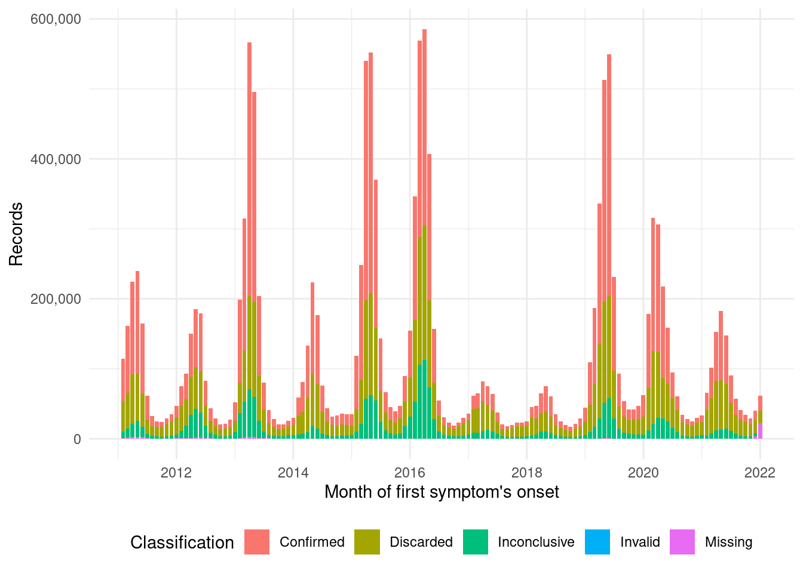

flowchart LR
A[Raw dataset] --> B(Imputation)
B --> C[Improved dataset]
C --> D{Filter valid dates}
C --> E{Filter positive cases}
D --> F(Aggregate)
E --> F
F --> G[Municipality and date dataset]
F --> H[Municipality and epiweek dataset]
Export aggregated database
Context
This notebook aims to create a database with aggregated counts of positive dengue cases for spatial and time units.
The aggregation will be on municipalities and time will be date and epidemiological week.
Method
- After the steps of raw dataset download and imputation
- Load the
dengue_improved.parquetdata - Filter valid dates
- Filter positive cases
- Aggregate by municipality and date of first symptom’s unset and by municipality and the epidemiological week of the first symptom’s unset.
Packages
library(tidyverse)── Attaching core tidyverse packages ──────────────────────── tidyverse 2.0.0 ──
✔ dplyr 1.1.2 ✔ readr 2.1.4
✔ forcats 1.0.0 ✔ stringr 1.5.0
✔ ggplot2 3.4.2 ✔ tibble 3.2.1
✔ lubridate 1.9.2 ✔ tidyr 1.3.0
✔ purrr 1.0.1
── Conflicts ────────────────────────────────────────── tidyverse_conflicts() ──
✖ dplyr::filter() masks stats::filter()
✖ dplyr::lag() masks stats::lag()
ℹ Use the conflicted package (<http://conflicted.r-lib.org/>) to force all conflicts to become errorslibrary(arrow)
Attaching package: 'arrow'
The following object is masked from 'package:lubridate':
duration
The following object is masked from 'package:utils':
timestamplibrary(lubridate)Load data
Lazy evaluation.
dengue <- arrow::read_parquet(file = "parquet_improved/dengue_improved.parquet")
tally(dengue) n
1 19180457Filter valid dates
valid_interval <- interval(ymd("2011-01-01"), ymd("2021-12-31"))
dengue <- dengue %>%
mutate(DT_SIN_PRI = ymd(DT_SIN_PRI)) %>%
filter(DT_SIN_PRI %within% valid_interval)
tally(dengue) n
1 15561929Cases classification data export
dengue_classifications <- c("Febre hemorrágica do dengue", "Síndrome do choque do dengue", "Dengue com sinais de alarme",
"Dengue clássico", "Dengue com complicações", "Dengue",
"Dengue grave")dengue_cases_classification <- dengue %>%
mutate(CLASSI_FIN = case_when(
CLASSI_FIN %in% dengue_classifications ~ "Confirmed",
CLASSI_FIN == "Descartado" ~ "Discarded",
CLASSI_FIN == "Inconclusivo" ~ "Inconclusive",
CLASSI_FIN == 6 ~ "Invalid",
is.na(CLASSI_FIN) ~ "Missing",
.default = CLASSI_FIN
)) %>%
mutate(DT_SIN_PRI = lubridate::ceiling_date(x = DT_SIN_PRI, unit = "month")) %>%
group_by(DT_SIN_PRI, CLASSI_FIN) %>%
summarise(freq = n()) %>%
ungroup() `summarise()` has grouped output by 'DT_SIN_PRI'. You can override using the
`.groups` argument.write_parquet(x = dengue_cases_classification, sink = "parquet_classification/dengue_cases_classification.parquet")ggplot(data = dengue_cases_classification, aes(x = DT_SIN_PRI, weight = freq, fill = CLASSI_FIN)) +
geom_bar() +
scale_fill_hue(direction = 1) +
scale_y_continuous(labels = scales::comma) +
labs(fill = "Classificação") +
theme_minimal() +
theme(legend.position = "bottom") +
labs(x = "Month of first symptom's onset", y = "Records", fill = "Classification")
ggsave(filename = "dengue_cases_classification.pdf")Saving 7 x 5 in imageFilter positive cases of dengue
dengue <- dengue %>%
filter(CLASSI_FIN %in% dengue_classifications)
tally(dengue) n
1 8125611Aggregation
Municipality and date (“md”)
Including the step to fill the time series with zero values when certain dates do not have cases.
dengue_md <- dengue %>%
group_by(mun = ID_MN_RESI, date = DT_SIN_PRI) %>%
summarise(freq = n()) %>%
arrange(date) %>%
complete(
date = seq.Date(min(date), max(date), by = "day"),
fill = list(freq = 0)
) %>%
ungroup() %>%
collect()`summarise()` has grouped output by 'mun'. You can override using the `.groups`
argument.glimpse(dengue_md)Rows: 16,772,737
Columns: 3
$ mun <chr> "110000", "110000", "110000", "110000", "110000", "110000", "1100…
$ date <date> 2015-12-29, 2015-12-30, 2015-12-31, 2016-01-01, 2016-01-02, 2016…
$ freq <int> 1, 0, 0, 0, 0, 0, 0, 0, 0, 0, 0, 0, 0, 0, 0, 0, 0, 0, 0, 0, 0, 0,…dengue_md %>%
write_parquet(sink = "parquet_aggregated/dengue_md.parquet")Municipality and epidemiological week (“mw”)
dengue_mw <- dengue_md %>%
mutate(epi_week = paste0(epiyear(date), "-", str_pad(epiweek(date), 2, pad = "0"))) %>%
group_by(mun, epi_week) %>%
summarise(freq = n()) %>%
arrange(epi_week) %>%
ungroup() %>%
collect()`summarise()` has grouped output by 'mun'. You can override using the `.groups`
argument.glimpse(dengue_mw)Rows: 2,400,687
Columns: 3
$ mun <chr> "110005", "110006", "110014", "110034", "110140", "120017", "…
$ epi_week <chr> "2010-52", "2010-52", "2010-52", "2010-52", "2010-52", "2010-…
$ freq <int> 1, 1, 1, 1, 1, 1, 1, 1, 1, 1, 1, 1, 1, 1, 1, 1, 1, 1, 1, 1, 1…dengue_mw %>%
write_parquet(sink = "parquet_aggregated/dengue_mw.parquet")Session info
sessionInfo()R version 4.1.2 (2021-11-01)
Platform: x86_64-pc-linux-gnu (64-bit)
Running under: Ubuntu 22.04.2 LTS
Matrix products: default
BLAS: /usr/lib/x86_64-linux-gnu/blas/libblas.so.3.10.0
LAPACK: /usr/lib/x86_64-linux-gnu/lapack/liblapack.so.3.10.0
locale:
[1] LC_CTYPE=pt_BR.UTF-8 LC_NUMERIC=C
[3] LC_TIME=en_US.UTF-8 LC_COLLATE=en_US.UTF-8
[5] LC_MONETARY=en_US.UTF-8 LC_MESSAGES=en_US.UTF-8
[7] LC_PAPER=en_US.UTF-8 LC_NAME=C
[9] LC_ADDRESS=C LC_TELEPHONE=C
[11] LC_MEASUREMENT=en_US.UTF-8 LC_IDENTIFICATION=C
attached base packages:
[1] stats graphics grDevices utils datasets methods base
other attached packages:
[1] arrow_12.0.0 lubridate_1.9.2 forcats_1.0.0 stringr_1.5.0
[5] dplyr_1.1.2 purrr_1.0.1 readr_2.1.4 tidyr_1.3.0
[9] tibble_3.2.1 ggplot2_3.4.2 tidyverse_2.0.0
loaded via a namespace (and not attached):
[1] compiler_4.1.2 pillar_1.9.0 tools_4.1.2 bit_4.0.5
[5] digest_0.6.31 timechange_0.2.0 jsonlite_1.8.5 evaluate_0.21
[9] lifecycle_1.0.3 gtable_0.3.3 pkgconfig_2.0.3 rlang_1.1.1
[13] cli_3.6.1 rstudioapi_0.14 yaml_2.3.7 xfun_0.39
[17] fastmap_1.1.1 withr_2.5.0 knitr_1.43 systemfonts_1.0.4
[21] generics_0.1.3 vctrs_0.6.2 htmlwidgets_1.6.2 hms_1.1.3
[25] bit64_4.0.5 grid_4.1.2 tidyselect_1.2.0 glue_1.6.2
[29] R6_2.5.1 textshaping_0.3.6 fansi_1.0.4 rmarkdown_2.22
[33] farver_2.1.1 tzdb_0.4.0 magrittr_2.0.3 scales_1.2.1
[37] htmltools_0.5.5 assertthat_0.2.1 colorspace_2.1-0 ragg_1.2.5
[41] labeling_0.4.2 utf8_1.2.3 stringi_1.7.12 munsell_0.5.0